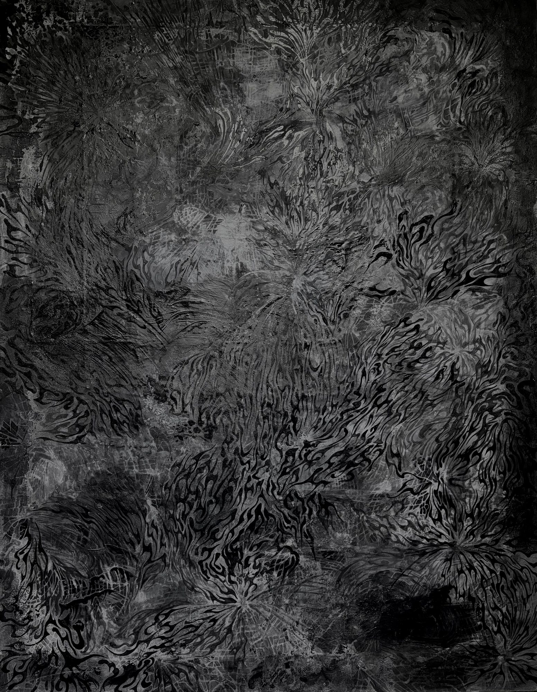

겹결격 GYEOP · GYEOL · GYEOK (Layer, Connection, Structure)
- 연도Year
- 2026
- 재료Material
- 석고 붕대, 석고, 먹
- 크기Size
- 116.8×91cm
- 시리즈Series
- 석고붕대·먹Plaster Bandage & Ink
재단된 석고 붕대 위에 반복적으로 축적되는 흔적은 전쟁과 연대, 그리고 반복되는 역사의 모습을 담아낸다.
격자 형태로 재단된 흰 석고 붕대 위에 먹과 석고를 번갈아 쌓으며 화면을 구성하였다. 먹으로 그려진 선은 미사일의 궤적과 폭격 이후 피어오르는 연기를 연상시키는 동시에, 축제의 밤을 수놓는 불꽃의 움직임으로도 읽힐 수 있다.
전쟁과 축제는 서로 대립되는 사건처럼 보이지만, 현실에서는 동시에 존재하며, 전쟁 속에서도 치유와 연대의 관계가 끊임없이 만들어진다. 작품은 이러한 상반된 사건과 관계가 공존하는 현실을 재료의 반복을 통해 드러낸다.
먹으로 그린 이미지는 다시 석고에 의해 덮이며, 선명했던 흔적은 점차 희미해진다. 그 위에 또 다른 이미지가 쌓이면서 새로운 화면이 형성되지만, 이전의 흔적은 완전히 사라지지 않는다. 이처럼 먹과 석고는 상반된 색과 물성으로 서로의 존재에 영향을 주고 받는다.
이러한 제작 과정은 전쟁과 연대가 역사 속에서 반복되고 축적되는 구조와 연결된다. 석고 붕대는 상처를 감싸고 보호하는 재료인 동시에, 화면을 덮어 흔적을 지우는 역할을 한다. 먹은 그 위에 다시 흔적을 남기며, 지워짐과 생성이 반복되는 화면을 만든다. 그려지고, 덮이고, 다시 드러나는 물질적 과정은 반복되는 역사의 구조를 시각화한다.
The traces that build up again and again on cut plaster bandage capture war, solidarity and the shape of a history that repeats itself.
The surface was built by alternately layering meok (Korean ink) and plaster over white plaster bandage cut into a grid. The lines drawn in ink recall the trajectories of missiles and the smoke that rises after a bombing, yet they can also be read as the movement of fireworks lighting up a festival night.
War and festival look like opposing events, but in reality they exist at the same time, and even in the midst of war, bonds of healing and solidarity are formed again and again. Through the repetition of materials, the work reveals a reality in which such contrary events and relationships coexist.
The images drawn in ink are covered again by plaster, and traces that were once vivid gradually fade. As another image is layered on top, a new surface takes shape, yet the earlier traces never disappear completely. In this way ink and plaster, with their opposing colors and material qualities, affect each other's presence.
This process of making connects to the way war and solidarity repeat and accumulate throughout history. Plaster bandage is a material that wraps and protects wounds, and at the same time it covers the surface and erases traces. The ink leaves traces on top of it once more, creating a surface where erasure and creation repeat. The material process of being drawn, covered and revealed again visualizes the structure of a repeating history.